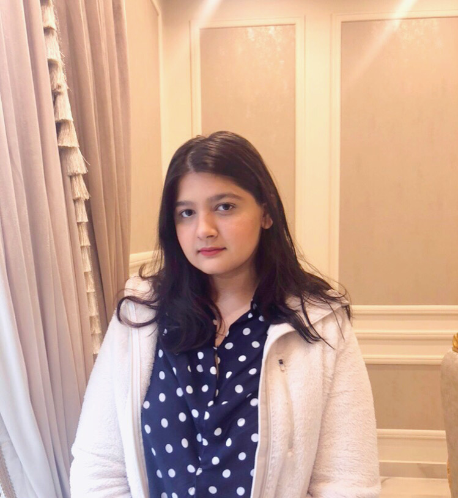

About me

I am a Computer Science senior at Lahore University of Management Sciences (LUMS) working towards empowering women in this field. My main areas of interest are Cybersecurity, Human Computer Interaction, and leveraging technology to make educational advancements. I have also been working in the Internet Security and Privacy Lab & Technology for People Initiative Lab at LUMS since the past summer and am currently applying to Graduate Schools in the US.
Education
BS Computer Science
Lahore University of Management Sciences - LUMS
American High School Diploma
International School of Choueifat, Lahore
Diplôme d'études en langue française
Delf A1 - French Studies
Leadership & Experience
Co-Founder & Vice President - LUMS Women in Computing (LWiC)
I formed this student-run society to support, encourage, and mentor females to pursue a degree in computing’s diverse field. With this society, I am playing my part in empowering women in computer science to succeed and thrive, in LUMS and beyond, through boot camps, networking opportunities, educational and professional events. Another primary goal is to decrease gender imbalance in Computer Science because no academic field should be male or female. I believe diversity is the key to new advancements because every individual brings in their own experiences.
Lead Instructor - Girls’ Coding Camp (GCC)
I am one of the lead instructors of Girls’ Coding Camp, a 7-week python programming camp for school going girls. I have to hold two lectures and conduct a lab every week. This camp exposes them to the field of Computer Science, so they can see it as a viable option when entering university.
Research Assistant - Technology for People Initiative lab
I am a research assistant at the Technology for People Initiative (TPI), a centre for applied research based at Lahore University of Management Sciences (LUMS). The main focus of this centre is leveraging technology to improve lives. Under this lab, I have been working on various projects in the domain of education, tech policy, and human-computer interaction. The project ‘Investigating Questionable Content & the Compliance of Children’s Online Privacy Protection Act on Children-Directed Gaming Websites’ is one of the major projects I have worked on, which was a collaboration between TPI and Internet Security and Privacy Lab (ISPL).
Research Assistant - Internet Security and Privacy Lab
I am a research assistant at the Internet Security and Privacy Lab, a research lab in LUMS which is affiliated with the National Center for Cyber Security (NCCS). The main focus of my research is looking into security and privacy dangers for children.
Projects
Aasra for the Visually Impaired Community - Project Leader
Advisor: Dr. Suleman Shahid (Ph.D. Tilburg University, Head of Computer-Human Interaction and Social Experience Lab at LUMS)
Idea: To support the visually impaired community through technology to make information accessible through electronic devices. In Pakistan's context, the usage of accessibility based softwares is still not as prevalent due to the lack of awareness pertaining to the existence of such softwares or the lack of knowledge concerning their use.
Solution: Provided an empirical tech-based solution for this problem, a mobile application that teaches the optimal use of these accessibility based softwares using courses and tutorials.
Actionable items:
- User Research - interviews, surveys, contextual inquiry, literature review, and market product analysis
- Design - low, medium & high fidelity, sketches, scenarios, storyboards, design alternatives, design literature review, low fidelity testing
- Development - made a fully functional audio-based mobile application prototype on Figma and Protopie
- Usability Testing - pre questionnaire, post questionnaire, user testing
- Final Article - wrote a final document on the project
Tools, Frameworks & Libraries: Balsamiq, Mural, Figma, Adobe XD, Adobe Photoshop, Protopie
Investigating Questionable Content & the Compliance of Children’s Online Privacy Protection Act (COPPA) on Children-Directed Gaming Websites
Labs: Internet Security and Privacy Lab & Technology for People Initiative lab
Advisor: Dr. Fareed Zaffar (Ph.D. Duke University)
Idea: Through formal cultural consensus analysis, there is a strong agreement that the most significant impact on children and their early development is from what they visualize and learn from things they see. However, with the increased usage of the web by children, it has become more crucial than ever before for children-directed gaming websites to undergo regularisation. Some of the online gaming websites host advertisements containing sexually explicit, violent, pornographic content. In some cases, these websites also collect personally identifiable information, which is against the COPPA guidelines.
Actionable items:
- I created personas for adults and children using the selenium library to gather cookies on children directed gaming websites.
- In conjunction with the SwitchyOmega proxy on burpsuite, I stored all of the servers' requests & responses.
- I manually documented the type of ads being shown to each persona, looking specifically for ads containing inappropriate content such as violence, nudity, sexual content, offensive language, gambling, alcohol, and drugs.
- I performed network analysis of the data packets collected
Tools, Frameworks & Libraries: OpenWM, Frida, Burpsuite, EditThisCookie, SwitchyOmega proxy
UX Audit - Lahore Electric Supply Company (LESCO)
Advisor: Dr. Suleman Shahid (Ph.D. Tilburg University)
Idea: Explored the issues encountered while using the website and, through a series of steps, determined their cause. Based on these reasons, provide actionable recommendations to eliminate or diminish these issues and improve the overall user experience.
Actionable items: Examined the LESCO website usage, conducted stakeholder interviews to gather information about how individuals feel about the website and, based on those, created user personas, examined user flows & objectives, and conducted heuristic evaluation based on the criteria set by Jakob Nielsen, and made actionable recommendations.
Tools, Frameworks & Libraries: Adobe XD, Adobe Photoshop, Figma, Canva
UX Audit - Lahore Electric Supply Company (LESCO)
Advisor: Dr. Suleman Shahid (Ph.D. Tilburg University)
Idea: To enable faster and efficient routing of Medical First Responders to emergencies on-campus based on availability, duty hours, and location, and provide the organization with an automated structure to help carry out other routine tasks.
Actionable items: User requirement study, Application design, Application development, Testing - manual and automated
Tools, Frameworks & Libraries: Dart, Flutter, JavaScript, Adobe XD, Adobe Photoshop, GitHub
The code is available here.
Suicides Spawn
Advisors: Dr. Ihsan Ayyub Qazi (Ph.D. University of Pittsburgh) & Dr. Mobin Javed (Ph.D. UC Berkeley)
Idea: Develop an association between suicide rates from 1985 to 2016 with GDP, HDI, generation, literacy rate, etc.
Actionable items: Performed data cleaning & hypothesis testing; Conducted a T-test on a few features
A detailed blog was written as part of the project. It can be found here.
Speaker Recognition and Gender Classifier
Advisor: Dr. Agha Ali (Ph.D. Carnegie Mellon University)
Idea: Build a model that classifies gender based on audio & a speaker recognition multi-class classifier
Solution: Got an accuracy of 82-83% on the gender classifier and 93% on the speaker recognition classifier
Teaching Experiences
Teaching Assistant - Network Security
I will be starting this assistantship in two weeks.
Teaching Assistant - Programming and Data Analysis for Social Sciences
I assisted, graded, and mentored 40 students by keeping daily appointment slots and conducting weekly tutorials via zoom. Additionally, since this was the course’s first offering, I also helped structure its curriculum and graded components.
Teaching Assistant - Computational Problem Solving
I assisted, graded, and mentored students in groups of up to 11 during weekly labs. Additionally, I supported student learning objectives through personalized and small group assistance during weekly office hours. I also mentored and graded groups of students in their final project.
Teaching Assistant - Introduction to Programming
I supported the instructor with test administration and assignment, quiz, and lab grading. Additionally, I delivered personalized educational, behavioral, and emotional support to individual students to enable learning outcomes. I also supported student learning objectives by holding tutorials and weekly office hours.
Student Volunteer - Door of Awareness
I spent a month teaching children various subjects such as Mathematics and English from underprivileged backgrounds at this charity-based organization. I had to designs lectures according to their experience and background.
Student Volunteer - SOS Children’s Villages, Pakistan
I spent a month teaching children from underprivileged backgrounds at this orphanage. I had to designs lectures according to their experience and background. Additionally, they were not as fluent in English and so I had to teach them in Urdu.